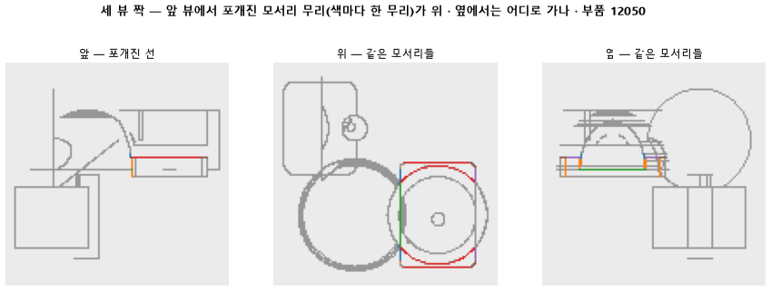

한 줄로
물음: 한 장의 도면에서 서로 포개진 선을, 나머지 두 장으로 가를 수 있을까?
답: 넷에 셋은 가를 수 있다. 목표는 열에 아홉이었으니 판정은 실패다. 겹침을 전부 세 장 맞추기 단계에 맡길 수는 없다.
왜 이 판을 했나
부품 도면은 위 · 앞 · 옆 세 장이다. 한 장에서는 선 하나로 보여도, 실제로는 깊이가 다른 3D 모서리 여러 개가 겹쳐 있을 수 있다. 이런 겹침은 그 한 장만 봐서는 풀 수 없다.
그래서 이 일은 다음 단계에 넘기려 했다. 세 장의 선을 서로 짝지어 3D 모서리로 세우는 단계다. 이 계획은 다른 두 장이 겹침을 실제로 갈라 줄 때만 성립한다. 그 상한을 학습도 모델도 없이, CAD 정답 모서리만으로 먼저 쟀다.
바꾼 것 하나
포갠 선을 한 장으로만 보던 것을 세 장으로 보게 했다. 시험 부품 299개의 CAD 모서리를 세 장에 투영했다. 한 장에서 선 하나로 포개 보이는 모서리 묶음을 「무리」라 부른다. 무리 안의 짝마다 다른 두 장 중 한 곳에서라도 떨어지는지 봤다. 짝마다 갈리는 장이 달라도 된다. 모든 짝이 갈려야 그 무리를 갈린 것으로 셌다.
결과

| 이 판 (세 장) | 대조 (한 장만) | 목표 | 넘었나 | |
|---|---|---|---|---|
| 모든 짝이 갈린 무리의 몫 | 0.76 | 0.00 | 0.90 이상 | ✗ |
| 투영에 실패한 부품 | 0개 | — | 15개 이하 | ✓ |
대조는 바닥값이다. 한 장만 보면 정의상 아무것도 못 가른다. 그래서 0.76은 전부 다른 두 장이 보탠 몫이다. 투영 실패는 CAD 파일을 못 읽거나 못 그리는 경우다. 299개 중 5 % 정도까지는 빠져도 된다고 미리 정했다.
왜 이렇게 나왔나
확인한 것
- 겹침은 드물지 않다. 그려진 선의 38 %가 무리다.
- 무리 하나에는 모서리가 평균 4.12개 들어 있다. 그만큼 짝이 많아서 한 짝만 안 갈려도 무리가 실패로 셌다.
짐작 (아직 확인 안 함)
- 깊이만 다른 두 모서리라면 다른 장에서는 떨어져야 맞다. 그런데도 안 갈렸다면 깊이 차이가 128×128 도면에서 한두 화소 안이라 붙어 보였을 수 있다.
- 다른 장에서 점으로 줄어드는 모서리를 우리 셈이 「안 갈림」으로 쳤을 수도 있다. 셈 코드를 다시 봐야 한다.
- 모서리가 많은 무리일수록 실패가 몰릴 것으로 본다.
한계
- 시험 부품 299개로 한 번만 쟀다. 계산이라 같은 부품에서는 흔들림이 없겠지만, 다른 부품 묶음에서는 모른다.
- 몇 화소 떨어져야 갈렸다고 볼지는 이 글에 적지 않았다. 38 %가 선 개수 기준인지 길이 기준인지도 기록에 없다.
- 실패한 무리가 한 짝만 남은 것인지, 통째로 붙은 것인지는 나눠 세지 않았다. 그림으로 하나하나 보지도 않았다.
배운 것과 다음
다른 장은 겹침을 꽤 풀어 준다. 하지만 세 장 맞추기에 통째로 맡기면 넷에 하나꼴로 풀리지 않는 무리가 남는다.
- 안 갈린 무리를 그림으로 모으고, 셈이 점이 된 모서리를 어떻게 다루는지 확인한다.
- 짝 단위와 무리 크기별로 다시 세어 실패가 어디 몰리는지 본다.
- 남은 몫을 한 장 안에서 풀지, 이 숫자를 보고 정한다.